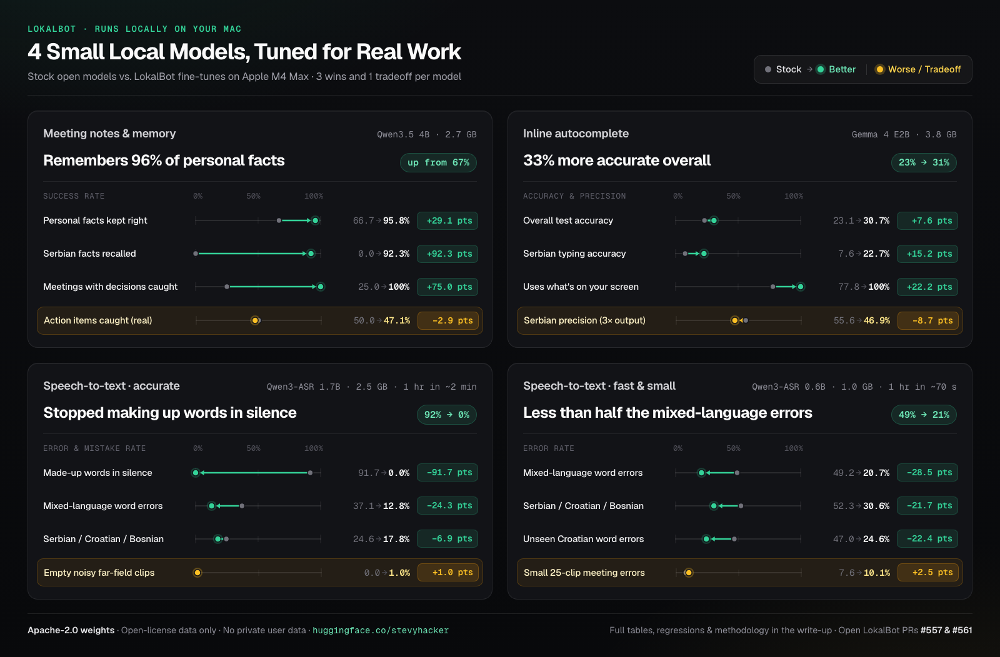

LokalBot is a private work-memory desktop app that runs on llama.cpp. It uses local models for three jobs: writing meeting notes and remembering personal facts (Think), finishing sentences as you type in other apps (Autocomplete), and transcribing meetings and voice dictation (Transcribe).
The stock open-weight models worked fine on clean English, then broke in ways that got annoying fast once I used them daily in English and Serbian. In one Serbian Cyrillic meeting from our replay suite (staging-sr), stock Qwen3.5 4B turned the summary and all eight action items into Russian and missed the decision completely:
Transcript (Serbian / Montenegrin Cyrillic)Јелена: „Договорили смо се да у четвртак у 14:00 CET пустимо нову верзију на пет одсто саобраћаја, под условом да провјера поновног учитавања прође. Нећемо је пустити за викенд.”
Stock Qwen3.5 4BСогласовано запуск новой версии на 5% трафика в четверг в 14:00 CET при условии проверки повторного загрузки, без запуска в выходные. Decisions came back as None, with 20 Russian-drift hits across the notes.
Qwen3.5-4B-LokalBot-v2Пуштање нове верзије на 5% саобраћаја у четвртак у 14:00 CET, под условом да провјера поновног учитавања прође. Saved as a decision, with zero Russian drift.
The other models had their own weak spots. Stock Qwen3.5 4B recalled 0 of 13 Serbian personal facts (translating them into English instead) and caught decisions on only 2 of 8 real decision-bearing meetings. Stock Gemma 4 E2B dropped from 25.3% autocomplete accuracy in English to 7.6% in Serbian Latin and 8.6% in Cyrillic, and sometimes suggested outdated saved facts over text that was right there in the active window. On 24 silence and room-noise clips carrying a custom vocabulary prompt (Mila Novak, Orion Launch, Acme.), stock Qwen3-ASR 1.7B echoed those names or invented words on 22 of them. And the smaller 0.6B speech model hit 52.3% word error rate on South Slavic speech and 49.2% on mixed-language clips.
Over about 18.5 hours I fine-tuned all four models (Qwen3.5 4B, Gemma 4 E2B, Qwen3-ASR 1.7B and Qwen3-ASR 0.6B), uploaded the Apache-2.0 GGUFs to Hugging Face, and opened PR #557 and PR #561 to wire them into LokalBot. Think v2 and Gemma v3 are opt-in alongside the stock defaults, while PR #561 switches the default Transcribe pins.


Before training anything, I set a few constraints. Every training set had to use open-license data only (Apache-2.0, ODC-By, CC0 and CC-BY-4.0, plus synthetic examples from open-weight teachers), with no private user recordings or meetings, no CC-BY-SA, and no non-commercial datasets. Holdouts were frozen ahead of time and checked for n-gram and entity overlap. Most task-specific eval sets are self-built or synthetic alongside public splits from QMSum, FLEURS, VoxPopuli, ParlaSpeech-RS and AMI, and the 12 local real-meeting references come from a frontier model rather than human labels.
All numbers below were measured on an Apple M4 Max through the real inference paths: LokalBot’s unmodified macOS Release binary for Gemma 4, Swift MeetingNotesReplayTests for the meeting replays, and harnesses hitting our vendored llama.cpp v1.0.0 Metal server for memory retention, SparkX26 and ASR.
What got worse
None of the four models is a pure upgrade on every axis. Before getting into the recipes, here are the regressions I kept and documented in each model card:
Qwen3.5 4B v2is more eager on noisy real-world transcripts, which triggers more quote-mismatch validator retries (72 rejections and 21 repairs vs. 40 and 19 for stock, and 33 and 10 for v1). On the 12 local meetings, stock still has higher action recall against the frontier reference (50.0% vs. 47.1%), v1 resolves a higher share of owners (75.8% vs. 67.4%), and v2 outputs 24 decisions and 95 actions against 19 and 70 in the reference, so it over-extracts a bit. On SparkX26 it passes 8/12 cases vs. 7/12 for stock, but scores 36/43 individual fields vs. 37/43.Gemma 4 E2B v3drops Serbian Latin precision from 55.6% to 46.9% as coverage climbs from 13.6% to 48.5%. Median boundary latency goes from 20.6 ms to 26.6 ms (typing p95 improves from 95.6 ms to 87.2 ms). Email precision recovers from 59.5% in v2 to 70.7% in v3, still short of stock’s 74.3%, even though email accuracy rises from 50.0% to 55.8%. Two tiny memory checks (memory_devat 5/6 andmemory_rel_heldoutat 4/5) remain one conservative abstention below stock, with zero false retrievals and 12/12 onmemory_heldout.Qwen3-ASR 1.7B v3returns empty transcripts on 2 of 200 very low-SNR far-field AMI-400 SDM clips (stock returns 0/200 empty). Word error rate across the five evaluated guard languages (en/de/fr/es/ru) ticks up 0.18 points (4.35% to 4.53%). Because AMI SDM train is in the training mix, the −1.67 point gain on AMI-400 SDM is in-domain.Qwen3-ASR 0.6B v1regresses on the small 25-clip AMI holdout (+2.54 points close-mic, +0.58 far-field) before coming out slightly ahead on the 8× larger 400-clip AMI suite (−0.15 and −0.34 points, with 1/200 empty far-field). On AMI-400 it runs at the same speed as stock (51.3× vs. 51.9× real-time); the faster 52.7× vs. 39.7× number on holdout mostly comes from shorter outputs once the South Slavic script drift stopped.
Checking the prompts before renting a GPU
A lot of GGUF fine-tunes go wrong before training even starts because the training script feeds slightly different special tokens or prompt text than llama.cpp sends at runtime. I checked exact token parity on all three families first.
For Qwen3.5, LokalBot runs extraction in non-thinking mode (--jinja --reasoning on, enable_thinking: false, temperature 0, 32K context), so assistant-only loss masking had to match that template byte for byte. For Gemma 4, vendored llama.cpp v1.0.0 forces add_bos=true (token 2) regardless of the GGUF flag. Training prepended <bos> on every row without <eos>, masked loss over the conditioning preface (Visible in this window:, Relevant saved facts:, On the clipboard:) and initial warmup tokens, and normalized loss by the actual valid token count across the gradient accumulation window. For Qwen3-ASR, LokalBot sends ISO codes (language hr<asr_text>) and <asr_text>-only auto prompts, while stock Qwen3-ASR expects full names like language English. Training on our real prompt strings and masking loss through <asr_text> got rid of that mismatch.
I also ran a null round-trip check before spending compute: merge a zero-weight LoRA, convert to GGUF, and confirm llama-server produces the same output as stock.
Think: Qwen3.5 4B
LokalBot’s Think tasks want two things that usually fight each other in a 4B model: enough judgment to decide which facts are worth saving and keep Serbian Cyrillic out of Russian, and fast JSON extraction with no chain-of-thought tokens at runtime.
To get both, I ran Qwen3.6-35B-A3B (UD-Q4_K_XL, Apache-2.0) with enable_thinking=True so the 35B MoE teacher could reason through each example, then checked every output with LokalBot’s schema, verbatim-quote and grounding validators. Only outputs that passed became direct enable_thinking=False training targets for the 4B student. The v2 set had 1,067 verified examples (1,014 train, 53 val) mixing pszemraj/qmsum-cleaned (excluding the AMI eval series), synthetic English and Serbian meetings, repair traces, Personal Context memory and hard negatives, Day Digest segments, multi-step Ask tool calls, and 180 general instruction rows from allenai/tulu-3-sft-mixture (ODC-By).
Qwen3.5 mixes regular attention layers with Gated DeltaNet linear-attention layers, so I attached bf16 LoRA (r=32, alpha=64, lr=1.0e-4, 2 epochs) to all 248 language_model linear projections, including DeltaNet’s in_proj_qkv/z/a/b and out_proj, leaving the vision tower untouched. After merging in fp32, converting to F16 GGUF, and running a 64-chunk bilingual imatrix (English, Serbian Latin and Cyrillic, plus LokalBot JSON), Q4_K_M came out to 2,741,241,920 bytes, the exact same byte count as stock.
The first pass (v1) fixed decisions (3/6 to 6/6 on Golden6, 2/8 to 8/8 on real meetings), Serbian memory recall (0/13 to 12/13) and Russian drift (20 to 0), but it got timid on multi-speaker action items (27 down to 17 on Golden6) and saved 7 unwanted English memory items. For v2 I added 78 action-dense meetings and 65 hard-negative memory rows. Memory retention climbed to 115/120 (95.8%, 1 unwanted item), English useful recall hit 94.2% (above stock Qwen3.5 9B’s 71.2%), and Golden6 actions recovered to 34, with the higher retry rate on noisy meetings noted above. Both checkpoints live on Hugging Face.
See the full Qwen3.5 4B numbers
Suite (Apple M4 Max · llama-server v1.0.0) |
Stock 4B | LokalBot v2 | Change |
|---|---|---|---|
| Memory Retention — English (96 cases, 52 gold) | 70/96 (53.8% recall, 3 unwanted) | 92/96 (94.2% recall, 1 unwanted) | +22.9 pp (+40.4 pp recall) |
| Memory Retention — Serbian (24 cases, 13 gold) | 10/24 (0/13 recall, 9 unwanted) | 23/24 (12/13 recall, 0 unwanted) | +92.3 pp recall |
| SparkX26 Guard (12 JSON / 43 fields · 6 tools) | 7/12 (37/43) · 6/6 · 0.58 s | 8/12 (36/43) · 6/6 · 0.52 s | +1 JSON (−1 field) |
| Golden6 Swift Replay (6 synthetic meetings) | 27 act · 3/6 dec · 20 RU · 10.4 s | 34 act · 6/6 dec · 0 RU · 9.8 s | +7 actions, 0 drift |
| 12 Real Meetings (frontier ref: 19 dec / 8 mtgs, 70 act) | 5 dec (2/8) · 50.0% rec · 33.1 s | 24 dec (8/8) · 47.1% rec · 32.3 s | 8/8 dec; 72 vs 40 retries |
Full stock / v1 / v2 table and SHA-256 checksums are in stevyhacker/Qwen3.5-4B-LokalBot-GGUF.
Autocomplete: Gemma 4 E2B
Inline autocomplete only shows a suggestion when the top token crosses a confidence threshold. Plain SFT makes logits sharper everywhere, which makes the model overconfident and floods the editor with bad guesses.
To keep probabilities calibrated, I used Forward KL over fp32 top-64 logits plus a tail bucket, calling disable_adapter() so the stock E2B self-teacher didn’t take extra VRAM. Ungrounded English and Serbian rows blended cross-entropy with KL from a 78/22 mix of google/gemma-4-26B-A4B and stock E2B (the two share a 262,144-token vocab except for one mismatched ID, 249788, which I masked to -inf). Grounded rows using window text and saved facts stayed on stock E2B self-KL because 26B Base doesn’t know LokalBot’s stale-memory rules. Guard languages and calibration prose used pure self-KL with zero cross-entropy.
Gemma 4 E2B shares KV caches across layers 15–34, so k_proj and v_proj LoRA only attach to layers 0–14 (205 attention/MLP matrices). Each layer also has two Per-Layer Embedding (PLE) projections (70 extra matrices). The first run (v1, attention/MLP only, r=16) bumped Engine accuracy from 23.10% to 25.13%. In v2-PLE, switching to r=32 across all 275 matrices (52.3M trainable params), turning on live 26B KL, and adding a clean bilingual delta (with a filter so tech words like cloud and deploy don’t transliterate to Cyrillic) took Engine accuracy to 29.82%, Serbian Latin to 21.21%, visible-context grounding to 18/18, and blind holdout to 81.25%. Because rank, PLE, 26B KL and data all changed together, I don’t have a single-variable ablation for PLE by itself.
I then had Claude Opus compare 50 randomized dev pairs where v2-PLE and stock differed, without model labels. It preferred v2-PLE overall (27 to 9, with 14 ties; 22–5–5 under production gates), but kept pointing out bad email completions. Checking the benchmark showed email precision had dropped from 74.3% to 59.5%, and two small memory sets had slipped by one case each.
Printing a few raw rows from the v2 training file showed why. The email_calib_kl_en slice had pulled in raw FineWeb pages with no spam filter, so SEO and adult spam starting with Subject: had poisoned email calibration. On top of that, the training mix had 681 Visible + Memory override rows against only 126 standalone Memory-only rows (a 5.4× skew). For v3 I dropped 309 bad rows, added 750 clean Subject: anchors, 650 standalone memory recall rows, 250 memory distractor anchors and 400 Serbian calibration rows, raised ungrounded KL from 0.45 to 0.52, and quantized with a bilingual EN/SR imatrix at merge scale 1.15. By step 1,156 all five validation buckets improved top-1 accuracy and lowered confident-wrong rate while holding Serbian Latin mean top-1 probability steady at stock’s 0.538. Email rose to 55.77% accuracy and 70.7% precision, while the two small memory sets stayed one abstention below stock. Weights live in stevyhacker/Gemma-4-E2B-LokalBot-GGUF.
See the full Gemma 4 E2B numbers
| Benchmark (LokalBot macOS Release binary) | Stock i1-Q6_K | v3 (scale 1.15, biling) | Change |
|---|---|---|---|
| Engine Overall (788 checkpoints) acc / prec | 23.10% / 50.1% | 30.71% / 52.4% | +7.61 / +2.24 pp |
| Email (52) acc / prec | 50.00% / 74.3% | 55.77% / 70.7% | +5.77 pp acc (−3.6 pp prec) |
| Long-Context (47) acc / prec | 19.15% / 33.3% | 31.91% / 41.7% | +12.76 / +8.4 pp |
| Serbian Latin (66) acc / prec | 7.58% / 55.6% | 22.73% / 46.9% | 3.0× acc (−8.7 pp prec) |
| Serbian Cyrillic (58) acc / prec | 8.62% / 38.5% | 18.97% / 40.7% | 2.2× acc (+2.2 pp prec) |
| Multilingual (40) · Heldout Midword (288) | 35.0% · 52.78% | 50.0% · 54.86% | +15.0 · +2.08 pp |
| Visible Context Dev (8) / Heldout (18) / Link (4) | 6/8 · 14/18 · 3/4 | 8/8 · 18/18 · 4/4 | 100% (0 stale) |
| Memory Heldout (12) / Dev (6) / Relevance (5) | 12/12 · 6/6 · 5/5 | 12/12 · 5/6 · 4/5 | −1 dev / −1 rel (0 false) |
| Frozen Blind Holdout (160 cases) | 73.13% (84.8% prec, 11 forbidden) | 82.50% (90.4% prec, 1 forbidden) | +9.37 pp (14/14 stale) |
| Latency (M4 Max) boundary med / typing p95 | 20.6 ms / 95.6 ms | 26.6 ms / 87.2 ms | +6.0 ms med / −8.4 ms p95 |
Full stock / v1 / v2-PLE / v3 progression is in stevyhacker/Gemma-4-E2B-LokalBot-GGUF.
Speech: Qwen3-ASR 1.7B and 0.6B
Qwen3-ASR echoes its custom vocabulary prompt on silence because pretraining rarely pairs empty audio with a populated system turn. When the mic picks up room hum or a click, the decoder sees names sitting in the prompt and reads them back.
The training mix had 47,314 CC0 and CC-BY-4.0 clips from FLEURS, VoxPopuli (hr and en), ParlaSpeech-RS and AMI (ihm and sdm train), plus synthetic EN+SR and EN+DE concatenations and synthetic room noise. To stop echoes without muting quiet speakers, the shipped runs paired 3% silence and colored noise (−60 to −25 dBFS, carrying vocabulary hints 70% of the time with an empty target) with 18% real speech attenuated down to −36 dBFS carrying full transcripts. South Slavic targets were normalized to Latin script, and seven guard languages (en/de/fr/es/ru/ja/zh) used pure Forward KL anchoring.
The earlier 1.7B v2 run froze audio_tower completely so the stock mmproj stayed bit-identical. It took silence clean rate from 8.3% to 100%, cut code-switching WER by 22.7 points, cut South Slavic by 6.7 points, and won 33–12–4 over 49 pairs in a blind Opus comparison. The main complaint was far-field AMI meetings (+1.14 points on the 25-clip holdout). Building an 8× larger AMI slice (200 close-mic and 200 far-field clips from disjoint val+test) showed v2 was already level with stock (26.04% vs. 26.08% SDM). In v3, unlocking the top four audio_tower layers (layers.20..23) plus proj1/proj2 (r=16 at 0.4× learning rate, 36.13M trainable params) with light 0.25 CE + 0.85 KL on AMI SDM cut far-field WER from 26.08% to 24.41% and close-mic from 10.24% to 9.79%, with 2/200 empty SDM clips as the tradeoff.
Running the same decoder-only r=32 recipe on Qwen3-ASR 0.6B (frozen audio tower, so the 214 MB stock mmproj stays untouched) took 14.4 minutes on one RTX PRO 6000 (450 steps) and gave the largest absolute WER drops of the day. At 1.02 GB combined, 0.6B v1 matches stock 1.7B on unseen Croatian (24.56% vs. 24.95%) and beats stock 1.7B on mixed-language speech (20.72% vs. 37.12%).
See the full Qwen3-ASR 1.7B and 0.6B numbers
| 1.7B pillar (466-clip holdout & 400-clip AMI) | Stock 1.7B Q8_0 | v3 (scale 1.15, top-4 enc) | Change |
|---|---|---|---|
Expanded AMI-400 ihm (200) / sdm (200) |
10.24% / 26.08% (0 empty) | 9.79% / 24.41% (2/200 empty) | −0.45 / −1.67 pp (in-domain) |
| Dictation silence / noise (24 clips) | 8.3% clean (16 echo, 123 w) | 100.0% clean (0 echo, 0 w) | +91.7 pp |
Code-switching sr+en, en+de (17) |
37.12% | 12.81% | −24.31 pp |
South Slavic sr/hr/bs (120) auto / pinned hr |
24.64% / 24.60% | 17.79% / 17.59% (0.06% non-Lat) | −6.85 / −7.01 pp |
OOD Croatian VoxPopuli hr (25) auto / pinned |
24.95% / 22.59% | 19.06% / 18.66% | −5.89 / −3.93 pp |
| Vocab recall / bias WER (15) · distractor (15) | 86.7% / 9.00% · 13.83% | 100.0% / 4.00% · 11.35% | +13.3 / −5.00 · −2.48 pp |
Guard en/de/fr/es/ru (200) · holdout RTFx |
4.35% · 28.5× | 4.53% · 31.2× (31.7× AMI) | +0.18 pp · +9.5% |
| 0.6B pillar (466-clip holdout & 400-clip AMI) | Stock 0.6B Q8_0 | LokalBot 0.6B v1 | Change |
|---|---|---|---|
South Slavic (120) auto / pinned hr |
52.26% (33.6% non-Lat) / 48.32% | 30.57% (0.02% non-Lat) / 29.95% | −21.69 / −18.37 pp |
OOD Croatian VoxPopuli hr (25) auto / pinned |
46.95% / 37.92% | 24.56% / 22.40% | −22.39 / −15.52 pp |
Code-switching sr+en, en+de (17) |
49.21% (22.1% non-Lat) | 20.72% (0.0% non-Lat) | −28.49 pp |
| Vocab recall / bias WER (15) · distractor (15) | 80.0% / 16.33% · 30.50% | 100.0% / 10.67% · 23.05% | +20.0 / −5.66 · −7.45 pp |
Expanded AMI-400 ihm (200) / sdm (200) |
10.87% / 26.57% (0 empty) | 10.72% / 26.23% (1/200 empty) | −0.15 / −0.34 pp |
Guard en/de/fr/es/ru (200) · silence (24) |
6.64% · 100.0% clean | 6.77% · 100.0% clean | +0.13 pp · same |
| Throughput (RTFx) AMI-400 / holdout | 51.87× / 39.67× | 51.30× / 52.72× | Same on AMI-400 |
Repos and SHA-256 checksums: Qwen3-ASR-1.7B-LokalBot-GGUF and Qwen3-ASR-0.6B-LokalBot-GGUF.
What I’d do again
I don’t know how much of this carries over to other apps, but on this run these things helped:
- Check the exact LoRA target names for the architecture instead of copying
q_projandv_proj. On Qwen3.5 that meant including the Gated DeltaNet projections, on Gemma 4 E2B skipping KV-shared layers 15–34 and adding the 70 PLE matrices, and on Qwen3-ASR 1.7B unlocking the top fouraudio_towerlayers at a lower learning rate. - Distill larger or thinking models into small fast students when you can’t afford thinking tokens or big weights at runtime.
Qwen3.6-35B-A3Binto non-thinkingQwen3.5 4BandGemma-4-26B-A4Bsoft-logit KL intoGemma 4 E2Bgave most of the quality gain with no extra latency. - Sweep LoRA merge scales (
0.75, 0.9, 1.0, 1.15) and calibrate a bilingual imatrix locally on the Mac before touching the blind holdout. Each merge takes about a minute, costs nothing in GPU time, and usually finds another point or two on dev. - Print raw training rows when a slice looks off. That caught the FineWeb spam in Gemma’s email anchors immediately, and the two blind v2 pairwise checks pointed straight at what to fix in v3.
- Check the boring GPU plumbing early. Marketplace ingress charges ($0.02/GB on 15 GB of audio streams), low-RAM containers killing data loaders, a stale CUDA 12.6 host driver silently falling back to CPU, and my laptop disk filling up during temporary bf16 GGUF writes all cost more time than picking a learning rate.
Try the models
In LokalBot, open Settings → Models → Browse Hugging Face and search stevyhacker/, or follow the open catalog PRs (#557 and #561). You can also run any of the GGUFs directly with llama.cpp:
# Think (Qwen3.5-4B-LokalBot-v2, non-thinking mode)
llama-server \
-m Qwen3.5-4B-LokalBot-v2-Q4_K_M.gguf \
-c 32768 -ngl 99 --jinja --reasoning on --port 8080
# Autocomplete (Gemma-4-E2B-LokalBot-v3)
llama-server \
-m Gemma-4-E2B-LokalBot-v3-i1-Q6_K.gguf \
-c 4096 -ngl 99 --port 8081
# Transcribe 1.7B (Qwen3-ASR-1.7B-LokalBot-v3 + paired v3 mmproj)
LLAMA_MEDIA_MARKER="<__media__>" llama-server \
-m Qwen3-ASR-1.7B-LokalBot-v3-Q8_0.gguf \
--mmproj mmproj-Qwen3-ASR-1.7B-LokalBot-v3-Q8_0.gguf \
-c 4096 -ngl 99 --port 8082